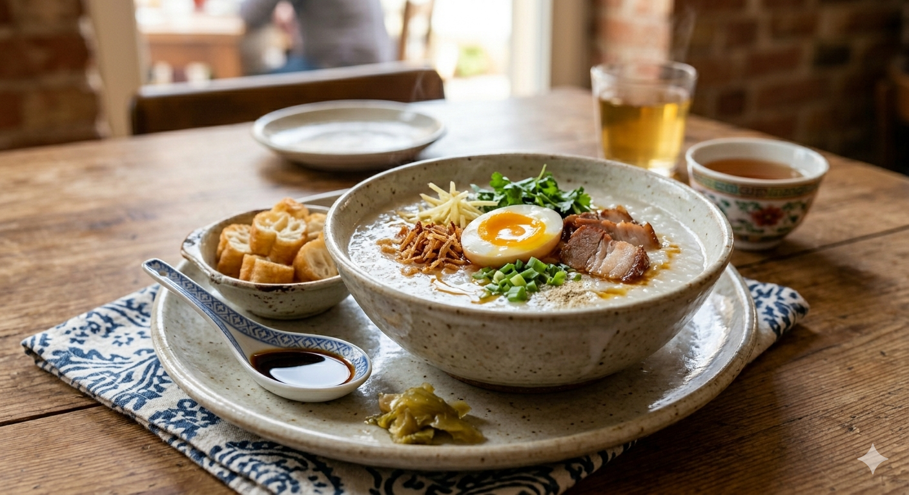

Rinse your rice thoroughly until the water runs clear. For an even creamier texture, you can soak the rice for 30 minutes or freeze the damp grains for a few hours to help them break down faster.
Use a ratio of roughly 1 part rice to 7–9 parts liquid. Bring the rice and stock (with a few ginger slices) to a boil, then reduce to a low simmer.
Cook for 45–60 minutes, stirring occasionally to prevent the bottom from scorching. As the rice breaks down, the mixture will thicken into a smooth, pearlescent porridge.
LWhile the congee simmers, soft-boil your eggs (6–7 minutes), slice your BBQ pork, and fry the shallots until golden and crisp.
Ladle the hot congee into a bowl. Arrange the pork, egg, and ginger on top. Drizzle with soy sauce and sesame oil, then serve with the crispy dough crullers on the side.